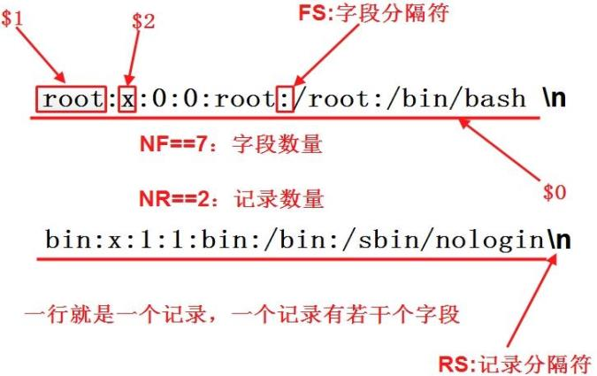
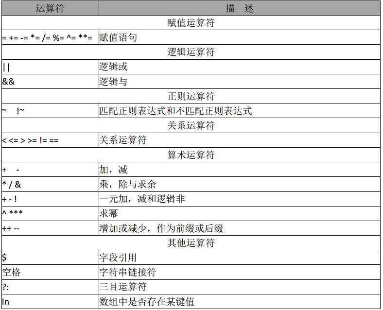

awk简介
awk其名称得自于它的创始人 Alfred Aho 、Peter Weinberger 和 Brian Kernighan 姓氏的首个字母。实际上 AWK 的确拥有自己的语言： AWK 程序设计语言 ， 三位创建者已将它正式定义为“样式扫描和处理语言”。它允许您创建简短的程序，这些程序读取输入文件、为数据排序、处理数据、对输入执行计算以及生成报表，还有无数其他的功能。
awk使用
awk的使用格式为
awk [选项] '{条件选择+处理动作}' 文件其中，条件选择可以是正则表达式匹配或者其他的bool值条件，处理动作对满足选择条件的文本进行进一步处理。
awk命令通常以行为处理单位，每接收一行进行一次处理。
awk初探
下面通过几个简短的命令简要说明awk
[csl@csl ~]$ echo 123 | awk '{print $1}'
123
[csl@csl ~]$ echo 123 | awk '{print "hello,world"}'
hello,world
[csl@csl ~]$ awk '{print $0}' /etc/passwd
root:x:0:0:root:/root:/bin/bash
bin:x:1:1:bin:/bin:/sbin/nologin
daemon:x:2:2:daemon:/sbin:/sbin/nologin
adm:x:3:4:adm:/var/adm:/sbin/nologin
lp:x:4:7:lp:/var/spool/lpd:/sbin/nologin
······awk既可以以文件作为输入，也可以通过管道将上一层的输出转化为输入（管道本身就是文件）。awk对于每一行输入执行print的操作，echo 123只有一行，所致只会输出一行，对passwd文件的每一行执行输出这一行的内容，效果与 cat /etc/passwd 一样。

字段分割符FS可以通过参数 -F指定
$ awk -F":" '{ print $1 }' /etc/passwd
$ awk -F":" '{ print $1 " " $3 }' /etc/passwd
$ awk -F":" '{ print "username: " $1 "\t\tuid:" $3" }' /etc/passwd
实例一 输出文件第10-20行的内容
[csl@csl ~]$ awk '{if(NR>=10 && NR<=20) print NR "：" $0}' /etc/passwd
10：operator:x:11:0:operator:/root:/sbin/nologin
11：games:x:12:100:games:/usr/games:/sbin/nologin
12：ftp:x:14:50:FTP User:/var/ftp:/sbin/nologin
13：nobody:x:65534:65534:Kernel Overflow User:/:/sbin/nologin
14：dbus:x:81:81:System message bus:/:/sbin/nologin
15：systemd-coredump:x:999:997:systemd Core Dumper:/:/sbin/nologin
16：systemd-resolve:x:193:193:systemd Resolver:/:/sbin/nologin
17：tss:x:59:59:Account used by the trousers package to sandbox the tcsd daemon:/dev/null:/sbin/nologin
18：polkitd:x:998:996:User for polkitd:/:/sbin/nologin
19：unbound:x:997:995:Unbound DNS resolver:/etc/unbound:/sbin/nologin
20：sssd:x:996:993:User for sssd:/:/sbin/nologin实例二 自定义字段分割符
[csl@csl ~]$ cat test.txt
i am Steve, i am 33 years old输出
Steve 33
[csl@csl ~]$ awk -F '[ ,]+' '{print $3 " " $6}' test.txt
Steve 33BEGIN和END模块
通常，对于每个输入行， awk 都会执行每个脚本代码块一次。然而，在许多编程情况中，可能需要在 awk 开始处理输入文件中的文本之前执行初始化代码。对于这种情况， awk 允许定义一个 BEGIN 块。
因为 awk 在开始处理输入文件之前会执行 BEGIN 块，因此它是初始化 FS（字段分隔符）变量、打印页眉或初始化其它在程序中以后会引用的全局变量的极佳位置。
awk 还提供了另一个特殊块，叫作 END 块。 awk 在处理了输入文件中的所有行之后执行这个块。通常， END 块用于执行最终计算或打印应该出现在输出流结尾的摘要信息。
实例三 打印/etc/passwd的账户数
[csl@csl ~]$ awk '{count++;print $0 } END{print "total count is: " count}' /etc/passwd
root:x:0:0:root:/root:/bin/bash
bin:x:1:1:bin:/bin:/sbin/nologin
······
total count is: 25在动作语句中对count累加，多个动作之间通过”;”隔开，count变量默认初始化初始化为0，最好还是显示初始化。
[csl@csl ~]$ awk 'BEGIN{count=0;print "[BEGIN] total count: " count;} {count++;print $0 } END{print "[END] total count is: " count}' /etc/passwd
[BEGIN] total count: 0
root:x:0:0:root:/root:/bin/bash
bin:x:1:1:bin:/bin:/sbin/nologin
······
[END] total count is: 25实例四 统计某个文件下的字节数
[csl@csl etc]$ ll|awk 'BEGIN{size=0;} {size=size+$5;} END{print "total size: " size;}'
total size: 857309以M为单位
[csl@csl etc]$ ll|awk 'BEGIN{size=0;} {size=size+$5;} END{print "total size: " size/1024/1024 "M";}'
total size: 0.817594Mawk运算符

逻辑运算符
[csl@csl etc]$ awk 'BEGIN{a=5;b=10;print (a>5||b>9,a>5&&b>9)}'
1 0正则运算
[csl@csl etc]$ awk 'BEGIN{a="100testaa";if(a~/100/) {print "ok"}}'
ok常用awk内置变量
| 变量名 | 属性 |
|---|---|
| $0 | 当前记录 |
| $1~$n | 当前记录的第n个字段 |
| FS | 输入字段分隔符，默认空格 |
| RS | 输入记录分隔符，默认\n |
| NF | 记录中的字段个数 |
| NR | 记录中的记录数，即行号，从1开始 |
| OFS | 输出字段分隔符，默认空格 |
| ORS | 输出记录分隔符，默认换行 |